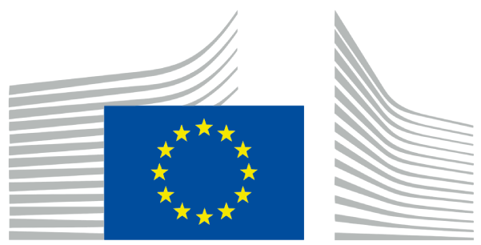
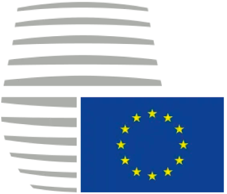
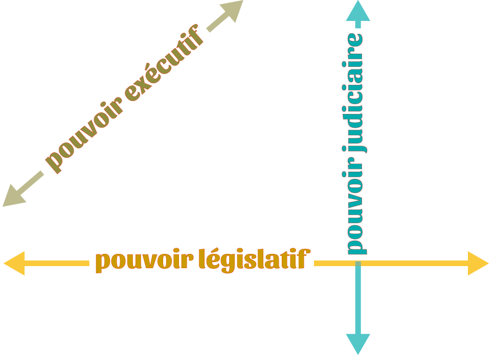
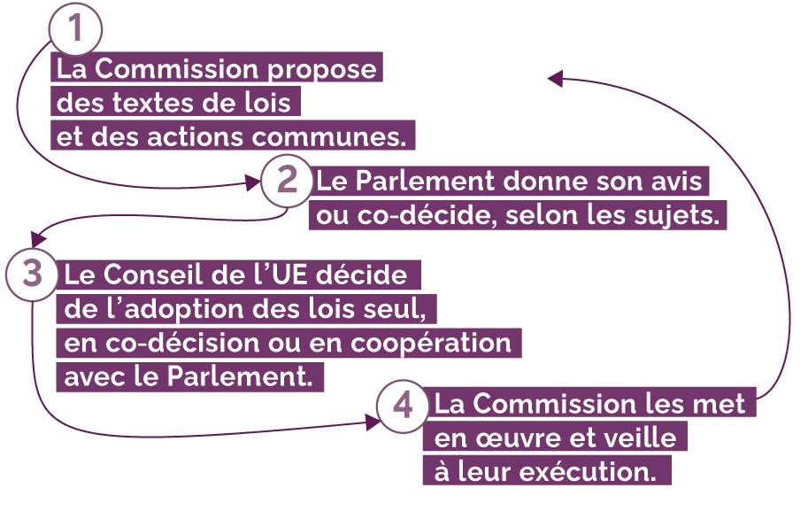

<!DOCTYPE html>
<html class="no-js" lang="en">

<head>

    <meta charset="utf-8"/>
    <meta content="IE=edge,chrome=1" http-equiv="X-UA-Compatible"/>
    <meta name="viewport" content="width=device-width">

    <title>La gouvernance européenne</title>

    <!-- CSS -->
<link href="inc/css/style.css" media="screen, projection" rel="stylesheet" type="text/css"/>
<link href="inc/css/grid_8.css" media="screen, projection" rel="stylesheet" type="text/css"/>
    <script src='inc/js/action.js' async></script>
    
</head>

<body>
    <div class="granule">
        
<div class="wrapper">
    <div class="untrois1_3">
        <h1><span class="bkg">&nbsp;La&nbsp;gouvernance&nbsp;</span> <br><span class="local">&nbsp;européenne&nbsp;</span>
        </h1>
        <button id="togg9">
            Quels sont les 3&nbsp;pouvoirs&nbsp;?
        </button>
        <div id="d9" class="hide">
        <p class="small">
        <span class="judic">judiciaire</span>&nbsp;: faire appliquer la loi, sanctionner son non-respect et arbitrer les conflits</p>
            <p class="small">
                <span class="judic">législatif</span>&nbsp;: discuter et voter les lois</p>
            <p class="small">
                <span class="judic">exécutif</span>&nbsp;: assurer l’exécution des lois</p>
        </div>
    </div>
        
    <div class="quatrecinq">
        <p class="small"><span class="lieu">&nbsp;dans le pays&nbsp;</span> qui exerce la présidence de l'UE</p>
        <h2>Conseil européen
        </h2>
        <p class="text"><strong>orientation</strong> et <strong>impulsion</strong> de la politique de l'UE</p>
    </div>
    <div class="sixhuit1_2">
        <button id="togg1">
            
        </button>
        <div id="d1" class="hide">
            <span class="compo">Composé d'un&nbsp;président du Conseil européen (élu pour un mandat de 2&nbsp;ans et&nbsp;demi)
                <br>+ chefs d'État et de gouvernement
                <br>+ président de la Commission européenne</span>
        </div>
        <br><button id="togg2">
            
        </button>
        <div id="d2" class="hide">
            <span class="role">&rarr; Joue un rôle important dans les décisions de l'UE
                <br>&rarr; Gère les questions complexes ou délicates</span>
            </div>
        </div>
    
    <div class="quatre2 dte">
    </div>
    <div class="cinq3">
    <div class="arrow-down"></div>
    </div>
    <div class="quatrecinq2 cadrelien">
        <div class="lien">
        oriente
        </div>
    </div>

    
    <div class="troiscinq3 marge margeHt">
        
        <p class="small margeTop"><span class="lieu">&nbsp;Bruxelles&nbsp;</span> </p>
        <div id="d10" class="hide">
        
        
        </div>
    </div>
    <div class="troiscinq4 marge">
        <h2>Commission européenne
        </h2>
        <p class="text">représente l'<strong>intérêt général de l'UE</strong></p>
    </div>
    <div class="sixhuit3_5">
        <button id="togg3">
            
        </button>
        <div id="d3" class="hide">
            <span class="compo">Composée d'un&nbsp;président, dont la nomination par le Conseil européen doit être validée par un vote du Parlement 
                <br>+&nbsp;27&nbsp;commissaires nommés par les gouvernements pour 5&nbsp;ans dont 3&nbsp;vice-présidents exécutifs 
                <br>+&nbsp;5&nbsp;vice-présidents</span>
        </div>
        <br><button id="togg4">
            
        </button>
        <div id="d4" class="hide">
            <span class="role">&rarr; Monopole quasi exclusif des propositions législatives
                <br>&rarr; Gère le budget et contrôle l'utilisation des fonds
                <br>&rarr; Représente l'UE à l'international
                <br>&rarr; Veille à la bonne exécution des lois
                <br>&rarr; Gère et met en œuvre les programmes&nbsp;&nbsp;</span>
        </div>
    </div>
    
    <div class="deux4 haut gche">
        <div class="arrow-right"></div>
    </div>
    <div class="deux5">
        <div class="arrow-down"></div>
    </div>
    <div class="undeux4">
        <div class="lien">
            navette législative
        </div>
    </div>
    <div class="six4 haut">
        <div class="arrow-left"></div>
    </div>
    <div class="sept4 haut dte"></div>
    <!--<div class="sept6 dte"></div>-->
    <div class="septhuit4">
        <div class="lien">
            contrôle
        </div>
    </div>
    <div class="trois5_6">
        <div class="moitie dte"></div>
        <div class="arrow-down decalfleche"></div>
    </div>
    <div class="trois5 cadrelien">
        <div class="lien">
            soumet les litiges
        </div>
    </div>
    <div class="cinq5_6">
        <div class="arrow-up decalfleche"></div>
        <div class="moitie dte"></div>
    </div>
    <div class="cinq6 cadrelien">
        <div class="lien margeTop">
            contrôle
        </div>
    </div>
    
    <div class="undeux5 margeHt">
        
        <p class="small margeTop"><span class="lieu">&nbsp;Luxembourg&nbsp;</span> 
        </p>
        <div id="d11" class="hide">
            
            
        </div>
    </div>
    <div class="undeux6 margeDte">
        <h2>Conseil de l’Union européenne
            <br><span class="sstitre2">Conseil des ministres</span>
        </h2>
        <p class="text">représente <strong>les États</strong></p>
        
    </div>
    <div class="untrois7_9">
        <button id="togg5">
            
        </button>
        <button id="togg6">
            
        </button>
        <div id="d5" class="hide">
            <span class="compo">Le Conseil est décliné en 10&nbsp;conseils spécialisés
                <br>&rarr; 27&nbsp;ministres ou autres représentants des gouvernements
                <br>&rarr; présidence tournante assurée par chaque État membre tous les 6&nbsp;mois
            </span>
        </div>
        <div id="d6" class="hide">
            <span class="role">&rarr; Vote les budgets et les directives européennes
                <br>&rarr; Tient un rôle exécutif dans certains domaines
                <br>&rarr; Définit la politique étrangère de l'UE
                <br>&rarr; Coordonne la politique des États membres (économie, justice, police)
            </span>
        </div>
    </div>
    
    <div class="trois6 haut">
        <div class="arrow-left"></div>
    </div>
    <div class="quatrecinq6 haut">
        <div class="arrow-right"></div>
    </div>
    <div class="troiscinq6">
        <div class="lien calageHaut">&nbsp;co-législateurs <br>et co-décisionnaires <br>sur le budget de l'UE&nbsp;</div>
    </div>
    
    <div class="troiscinq5_6">
        <div id="d17" class="hide">
            
        </div>
    </div>
    
    <div class="septhuit2_3">
        <button id="togg12">
            Comment naissent les&nbsp;lois européennes&nbsp;?
        </button>
    </div>
    <div class="unsept4_8">
        <div id="d16" class="hide">
            
        </div>
    </div>
    
    <div class="sixhuit5 margeHt">
        
        <p class="small margeTop"><span class="lieu">&nbsp;Strasbourg&nbsp;</span> 
        </p>
        <div id="d12" class="hide">
            
        </div>
    </div>
    <div class="sixhuit6_9 margeGche">
        <h2>Parlement européen
        </h2>
        <p class="text">représente <strong>les citoyens</strong></p>
        
        <button id="togg7">
            
        </button>
        <button id="togg8">
            
        </button>
        
        <div id="d7" class="hide">
            <span class="compo">Composé de 751&nbsp;députés élus au suffrage universel
            </span>
        </div>
        <div id="d8" class="hide">
            <span class="role">&rarr; Approuve la formation de la Commission (peut la démettre)
                <br>&rarr; Vote les budgets et les directives européennes,  intervient dans l'approbation des autres textes (règlements, etc.)
                <br><strong>Le rôle de contrôle du Parlement lui permet de  poser des questions au Conseil et à la Commission,
                    <br>et de créer des commissions d'enquête.</strong>
            </span>
        </div>
    </div>
    
    <div class="troissix7">
        <p class="small"><span class="lieu">&nbsp;Luxembourg&nbsp;</span> 
        </p>
        <h2 class="etroit">Cour de justice de l’Union européenne
        </h2>
        <p class="text elargi">représente <strong>les valeurs juridiques de l'UE</strong></p>
    </div>
    <div class="quatre7">
        <div id="d13" class="hide">
            
        </div>
    </div>
    <div class="troissix8">
        <button id="togg10">
            
        </button>
        <button id="togg11">
            
        </button>
        
        <div id="d14" class="hide">
            <span class="compo">Composé de juges nommés par les États membres
                <br>+&nbsp; 11 avocats généraux
            </span>
        </div>
        <div id="d15" class="hide">
            <span class="role">&rarr; Possède les compétences pour sanctionner les illégalités commises par les organes de l'UE ou ses États membres
                <br>&rarr; Veille au respect du droit communautaire
                <br><strong> Ses décisions sont exécutoires dans tous les États membres, c'est-à-dire que les États sont obligés de les appliquer.</strong>
            </span>
        </div>
    </div>
    
    
        
</div>
    
</div>
    
    
</body>
</html>
        